PROJETO
GAIA
Iniciativa de extensão da UFTM. Desenvolvemos soluções autônomas, competimos em nível nacional e levamos tecnologia às escolas públicas de Uberaba.
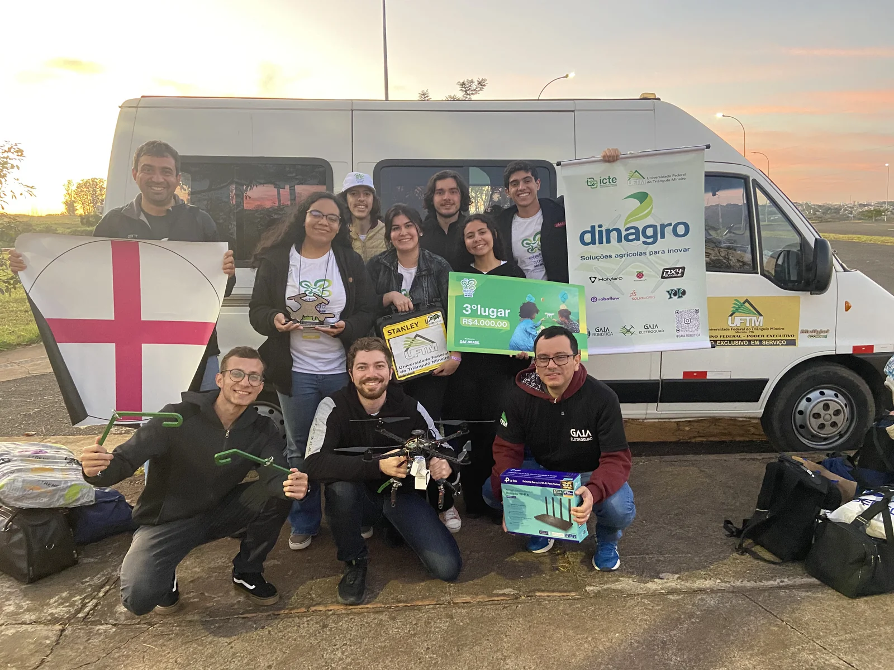
Quem Somos
Nascemos na UFTM para unir engenharia, robótica e impacto social. Dois projetos, um propósito.
O GAIA é um projeto de extensão e pesquisa em Robótica e Automação da Universidade Federal do Triângulo Mineiro. Fundado em 3 de abril de 2023, reúne estudantes com um objetivo direto: aprender fazendo — e deixar um rastro real no caminho.
O nome foi inspirado na IA da saga Horizon Zero Dawn — a inteligência responsável por supervisionar o Projeto Zero Dawn e restaurar o mundo. Aqui, a missão é menor em escala mas igualmente séria: formar engenheiros que transformam o que aprendem.
Dentro do GAIA existem dois projetos: o GAIA Eletroquad — competição SAE Brasil com drones — e o GAIA Robótica — extensão educacional, hackathons e formação técnica na UFTM.
23
23
Conquistas
Desde 2023, a equipe subiu ao pódio em competições regionais e nacionais.
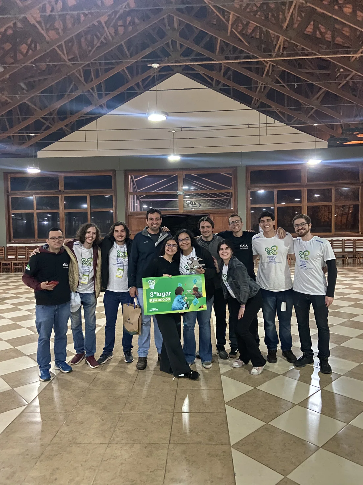
Bronze nacional com drone quadrotor desenvolvido do zero pela equipe. Um ano de projeto, resultado concreto.

Vice-campeões no HackaGIS Saúde — soluções para desafios da saúde em Uberaba.

Robótica nas escolas públicas de Uberaba — tecnologia real nas mãos de quem mais precisa de acesso.
GAIA ELETROQUAD
Drones, voo autônomo e competição SAE Brasil
Drone Quadrotor Autônomo
Parceria entre GAIA e Triângulo Aéreo. Um drone desenvolvido do zero para a SAE Brasil, com IA, GPS e visão computacional.
Drone quadrotor autônomo competindo em missões de navegação e entrega na maior competição de engenharia do país.
Sistema de voo sem piloto — GPS, fusão de sensores e navegação em tempo real sem intervenção humana.
Visão computacional para detecção de objetos, tomada de decisão e controle de trajetória em voo real.
Robôs Desenvolvidos
Do drone de competição à mão bioinspirada — a equipe constrói tecnologia que funciona.
Quadrotor autônomo para SAE Brasil. IA, GPS e sistema de entrega de cargas integrado.
Veículo terrestre com visão computacional para navegação autônoma em ambientes reais.
Braço com múltiplos graus de liberdade, controlado por computador para manipulação de precisão.
Mão bioinspirada com atuadores pneumáticos e estrutura em impressão 3D. Foco em bioengenharia.
Robô autônomo com bússola para navegação em labirinto. Desenvolvido com Arduino.
Rodas Mecanum de baixo custo. Movimento em qualquer direção sem girar o chassi.
GAIA ROBÓTICA
Extensão educacional, hackathons e formação na UFTM
Por que entrar na equipe?
Não é só sobre construir robôs. É sobre desenvolver a mentalidade de quem resolve problemas reais.
Implementação de garra robótica em veículo Arduino para coleta autônoma de objetos.
Do ferro de solda ao circuito funcionando. Oficinas práticas com projetos reais e componentes eletrônicos.
Programação embarcada do LED piscando ao projeto completo. Sem pré-requisitos.
Participação em hackathons reais — onde conquistamos o 2° no HackaGIS com uma equipe de 3 pessoas.
Visitas às escolas públicas de Uberaba. Robótica educacional para estudantes do ensino fundamental e médio.
Contato com professores, empresas, outros projetos — e colegas que se tornam parceiros de carreira.
Missão Educacional
Mais do que construir robôs — levamos o futuro às escolas públicas de Uberaba.
O GAIA nasceu com um propósito que vai além da universidade: democratizar o acesso ao conhecimento em robótica. Visitamos escolas de Uberaba e região com kits educacionais e demonstrações ao vivo.
A teoria da universidade não pode ficar trancada nos laboratórios. Acreditamos que a próxima geração de engenheiros está nessas salas de aula — e queremos ser o primeiro contato deles com a tecnologia.
Kits reais, demonstrações ao vivo, alunos programando robôs pela primeira vez.
Nada de slides. Os alunos operam os robôs eles mesmos.
Lógica computacional apresentada de forma lúdica e acessível.
Projeto oficial certificado pela UFTM, com relatório de impacto.
Nossa Equipe
Liderado por estudantes e orientado por docentes da UFTM com anos de experiência em automação.
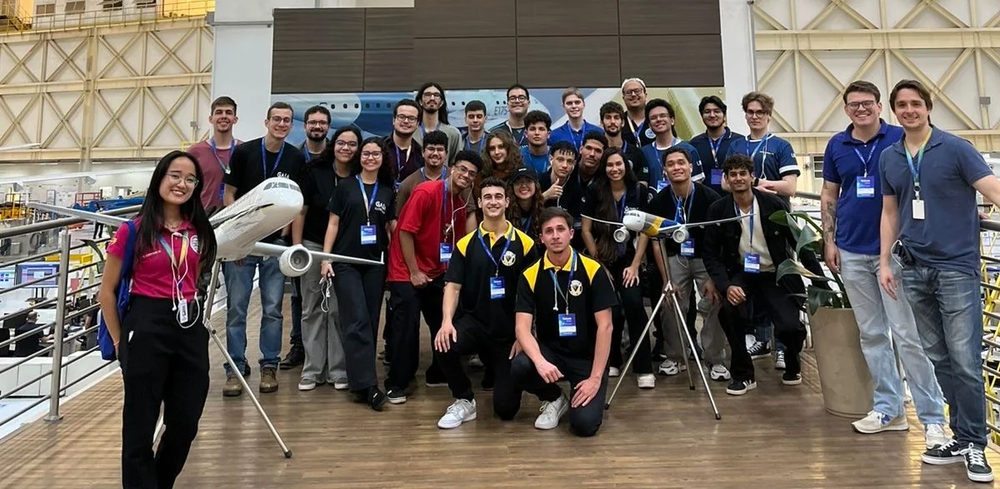
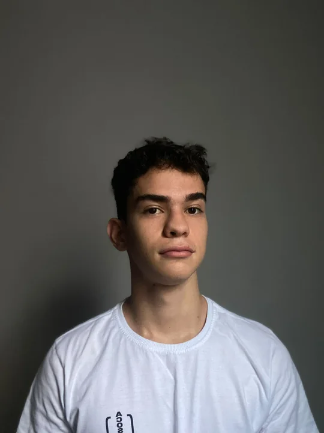
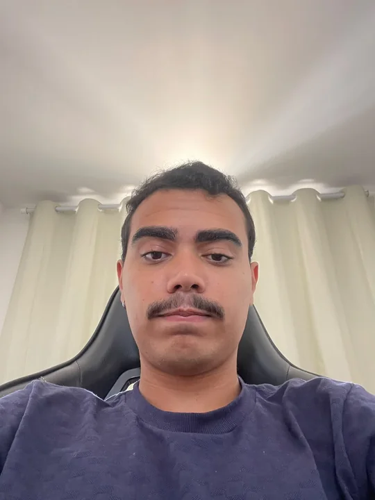
Apoio direto à liderança e gestão interna do GAIA.
Gestão financeira e organização de recursos do projeto.
Gestão acadêmica e técnica do GAIA Eletroquad.
Co-fundador e impulsionador da robótica na UFTM.
Membros Atuais
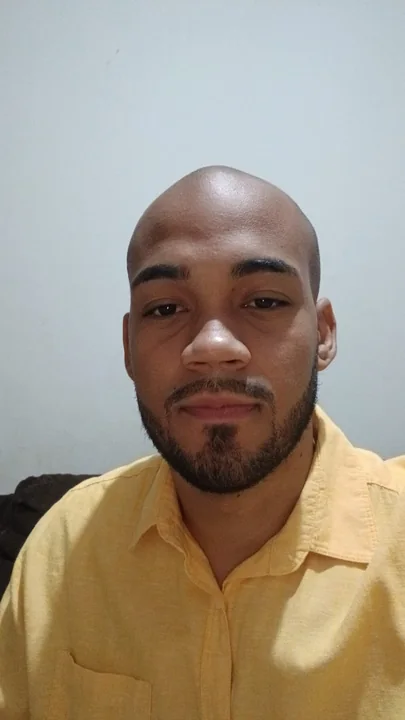
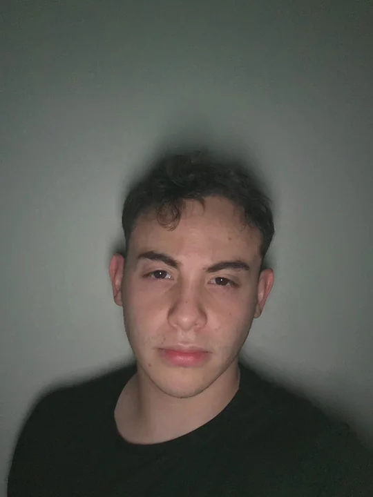
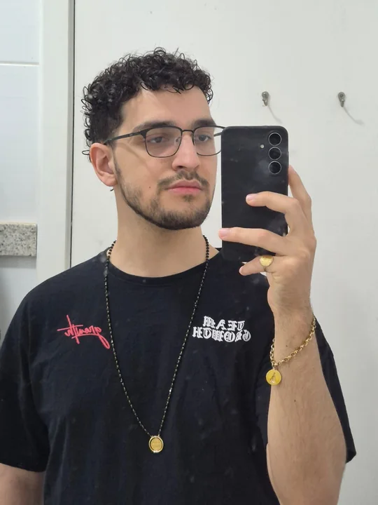
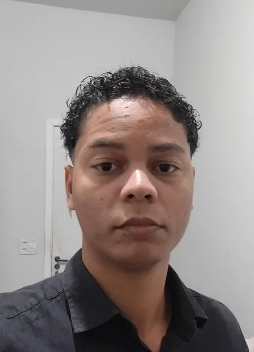
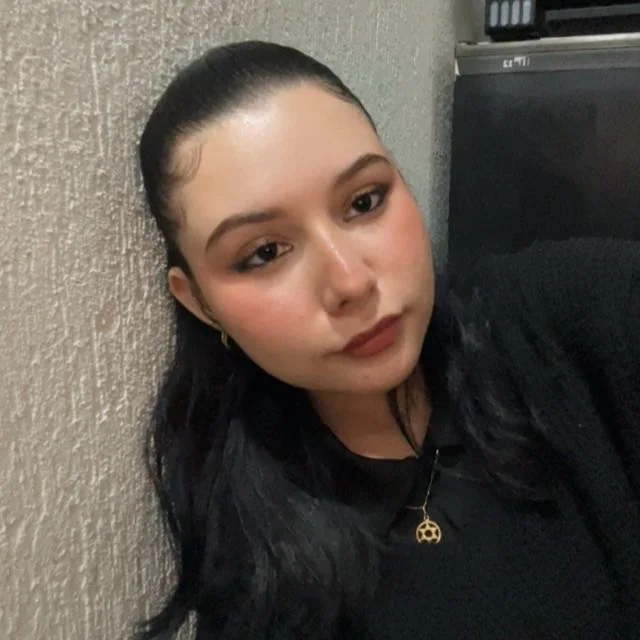
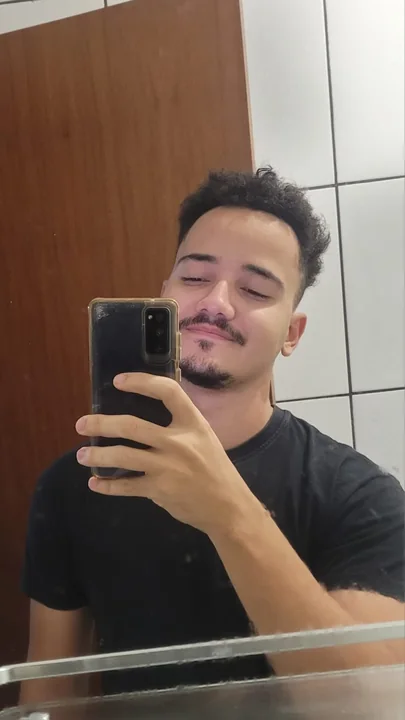
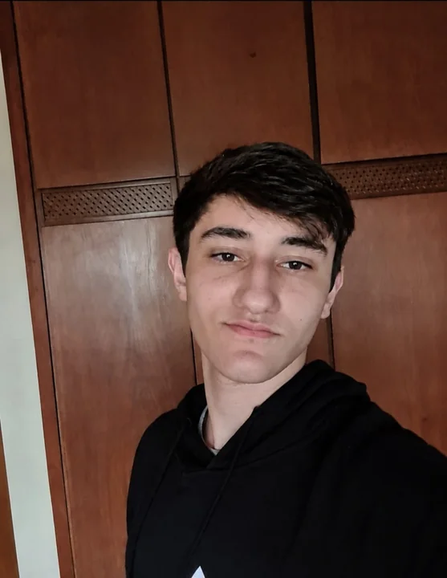
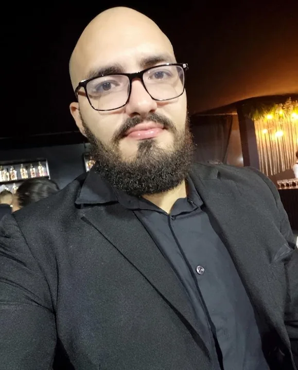
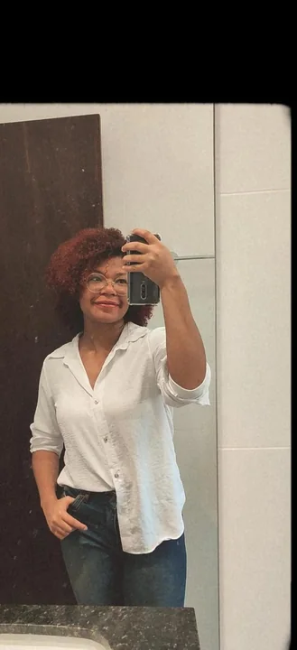
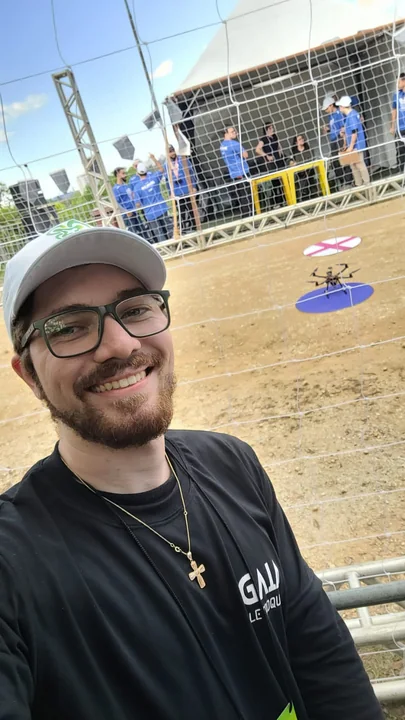
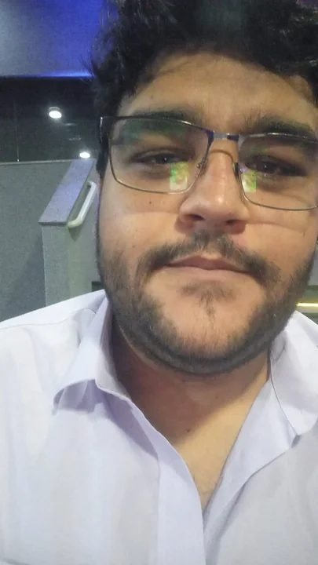
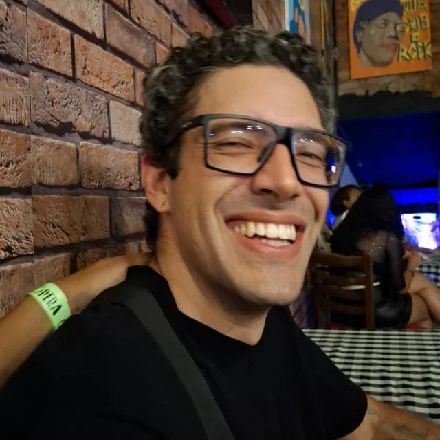
Membros que fizeram história
Cada linha de código, cada solda e cada escola visitada carrega um pouco de todos que passaram pelo GAIA — incluindo nossa ex-capitã Wanessa Karoline, uma das fundadoras do projeto. Gratidão de verdade.
Ver ex-membrosSeu curso no GAIA
Como a teoria de cada curso de engenharia encontra a prática aqui dentro.
Engenharia Mecânica
No GAIA: Você projeta o que o robô é fisicamente — chassi de drone, braços robóticos, análise aerodinâmica, impressão 3D e seleção de materiais sob carga real.
A teoria de dinâmica e resistência dos materiais sai do quadro e vai para o protótipo. Você sai com fluência em CAD e visão de projeto industrial.
Engenharia Elétrica
No GAIA: Você é o sistema nervoso do robô — dimensionamento de potência, baterias de Li-Po, PCBs, microcontroladores (Arduino/ESP) e integração de sensores.
Experiência com embarcados, troubleshooting em tempo real e eletrônica de potência. O que mais empresas de automação pedem em processos.
Engenharia Química
No GAIA: A robótica depende de materiais. Você atua em pesquisa de polímeros para impressão 3D, dissipação de calor em eletrônica e ciclo de vida das baterias.
Visão analítica aplicada à Indústria 4.0. Ciência dos materiais e processos com contexto real de desenvolvimento de produto.
Engenharia de Produção
No GAIA: Robô não sai do papel sem gestão. Você cuida de orçamento, cronograma (SAE Brasil tem data), Scrum/Kanban, controle de qualidade e cadeia de suprimentos.
A "mini-empresa" mais honesta que você vai ter na faculdade. Experiência de liderança real — não simulada em sala de aula.
Quer construir o próximo projeto com a gente?
Saiba como participarUma parceria de resultado
O GAIA Eletroquad surge da fusão de dois projetos com capacidades complementares.
Fundado em 2023 na UFTM. Robótica educacional, hackathons e extensão universitária em Uberaba.
Especialista em drones e sistemas aéreos. Expertise em voo autônomo e competições SAE Brasil.
Por que GAIA?
O nome carrega uma referência de ficção científica e um propósito real.
Inspirado na personagem dos jogos Horizon Zero Dawn e Horizon Forbidden West.
GAIA é a inteligência artificial responsável por supervisionar o lendário Projeto Zero Dawn.
Personificação da Mãe Natureza — com missão de restaurar o que foi quebrado. Aqui, fazemos o mesmo com o acesso à tecnologia.
Blog e Novidades
O que estamos construindo, aprendendo e conquistando.
Tem mais por aqui
Conteúdo técnico, oportunidades de parceria e muito mais.
com a GAIA
IA, Arduino, drones e robótica explicados do zero. Artigos feitos por quem constrói o que ensina.
Ver todos os artigosPatrocinador
Sua empresa junto de quem já está no pódio nacional. Visibilidade real, apoio à extensão universitária e acesso a talentos da UFTM.
Conhecer formas de apoio